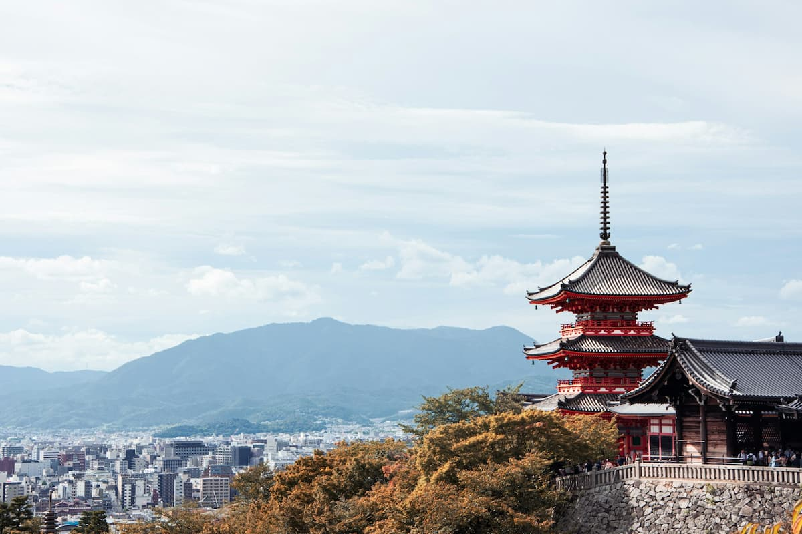
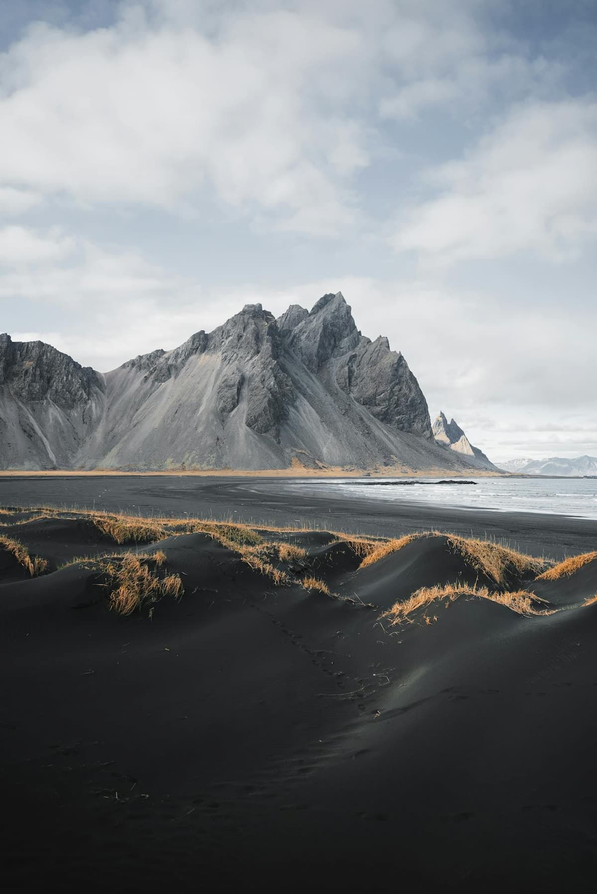
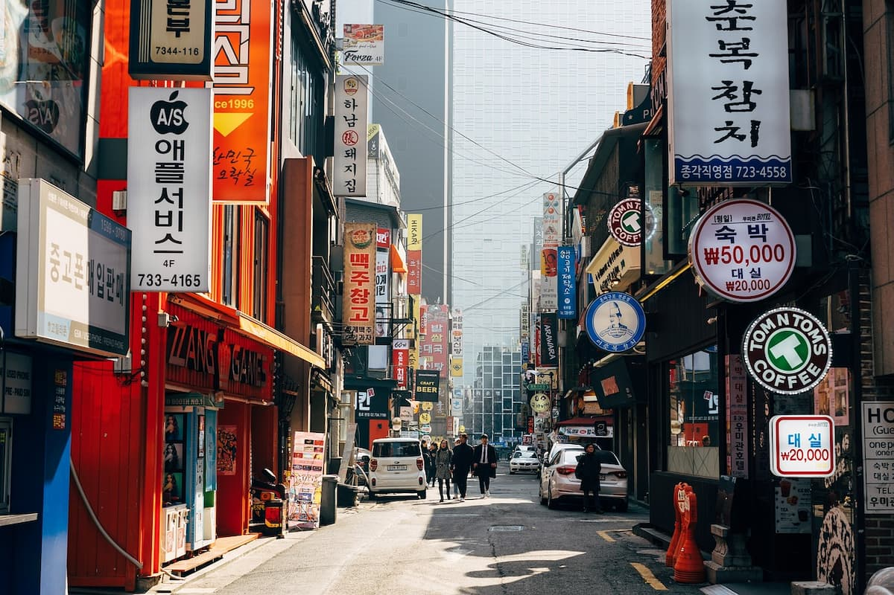

Miksi nämä maat?
Kioto, Japani
Japani on ehdottomasti minun mielenkiintoisin matkailukohde. Kioton valitsin siksi, että se historiallinen kulttuurikaupunki, jossa on upeita temppeleitä ja paljon eri nähtävyyksiä. Japanin matkaamisessa minua myös kiinostaa ruoka, jonka olen kuulllut olevan maailmanluokan parasta.
Islanti
Islanti matkakohteena on kiinostanut minua jo pitkään. Syy siihen on se ainutlaatuiset maisemat ja luonto. Se on samaa aikaa todella tyhjää ja karua, mutta myös samaa aikaa kaunis ja rauhallinen. Maisemat vaihtelee jäätiköistä tulivuoriin ja revontulista höyryäviin kuumiinlähteisiin. Eli tekemistä ja näkemistä riittäisi. Sen lisäksi tutustua voisi vaikka sen ainutlaatuisenn arkkitehturiin ja kulttuuriin.
Korea, Soul
Koreassa mua kiinnostaa eniten ruoka, kulttuuri ja teknologia. Tekemistä riittäisi enemmän kuin ehtii edes viikossa: eri ruokapaikkojen testailua, perinteisten temppeleiden ja museoiden kiertelyä sekä kaikenlaisten nähtävyyksien ihmettelyä. Ja jos joku päivä ei jaksa kulttuurikiertelyä, niin aina voi suunnata ostoksille. Valinnan varaa on paljon, vaateista, elektroniikasta, kosmetiikkaan.
